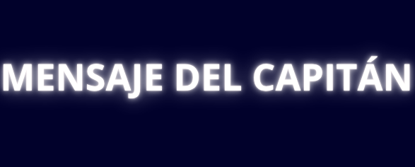

Público Objetivo:
Estudiantes de 7° u 8° Grado de EBI
Unidad Temática:
Programación Estructurada: Bucles
Conocimientos previos:
Variables, condicionales, tipos de datos y opradores relacionales y lógicos
Objetivo de Aprendizaje:
Serás capaz de aplicar bucles en tus programas, lo cual te permitirá automatizar tareas repetitivas sin necesidad de escribir el mismo código una y otra vez. Aprender a utilizar bucles es fundamental en programación porque optimiza el tiempo, mejora la eficiencia del código y facilita la resolución de problemas complejos.
La nave Esperanza Estelar está en problemas. Los Bucle-Bots han fallado y necesitamos Agentes de Automatización como tú para reprogramarlos. Te dejo aquí el Mensaje que nos envía el Capitán Foster. Luego de mirarlo mira los recursos que te dejo para aprender más y si decides aceptar, sumarte a la misión para salvar la nave.
